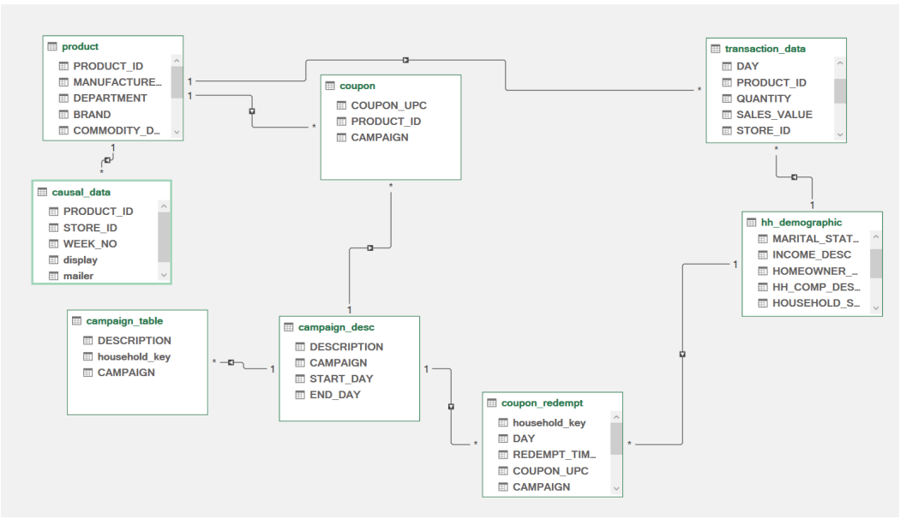
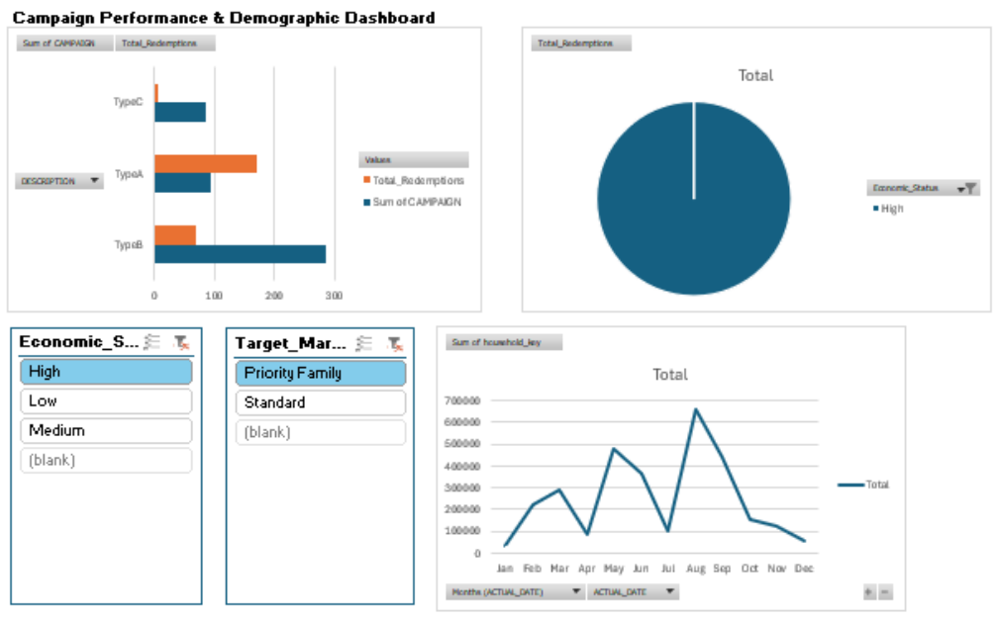

Data analytics & modeling case study
Retail Campaign Analytics Dashboard
A retailer runs hundreds of coupon campaigns but has no single view of which ones actually pay off. Working from the raw dunnhumby — The Complete Journey export, I cleaned and reshaped the data, built an eight-table relational model in Power Pivot, and delivered a one-page dashboard that answers which campaign types, months and customer segments drive coupon redemptions.
01Cleaning the raw export
The source files are flat CSV exports — household demographics, campaign descriptions, coupons,
redemptions and transactions. Three fields blocked analysis straight away: inconsistent product
department labels, dates stored as plain integers, and redemption times stored as integers such as
1430. Each was fixed with a column formula, then flattened with Paste as Values
so the model would not carry live formula dependencies into Power Pivot.
Normalising department labels
=PROPER(TRIM([@DEPARTMENT]))
TRIM() removes leading, trailing and doubled spaces; PROPER() forces a
consistent Title Case. Without this the same department appears as several distinct values and
splits every aggregation.
Turning the integer day counter into real dates
=DATE(2023,1,1)+[@DAY]-1
The dataset counts days from the start of the observation window rather than storing calendar dates. Anchoring day 1 to a base date produces a usable date column, which became the time axis for the monthly trend chart and allowed Group by Months in the pivot tables.
Parsing redemption time
=TIME(INT([@[REDEMPT_TIME_RAW]]/100), MOD([@[REDEMPT_TIME_RAW]],100), 0)
Integer division by 100 extracts the hour and the modulo gives the minutes, so 1430
becomes a real 14:30:00 time value that can be formatted and compared.
Making the sheet maintainable
- Converted the demographics sheet into a proper Excel Table, tbl_Demographics, so formulas use structured references like
[@INCOME_DESC]instead of cell coordinates and new rows inherit formatting and formulas automatically. - Defined two named ranges — Age_Group_Data and Income_Class_Map — so lookup formulas read as plain English and are auditable by a reviewer.
02Deriving the analysis dimensions
The raw demographics table has no column you can segment a campaign by, so I derived two: a marketing segment and an economic class. These became the two slicers that drive the whole dashboard.
Target_Marketing_Segment
=IF(AND([@HOMEOWNER_DESC]="Homeowner", [@KID_CATEGORY_DESC]<>"None"),
"Priority Family", "Standard")
A household that both owns its home and has at least one child is flagged Priority Family — the group worth paying more to acquire. Everything else is Standard.
Economic_Status
=VLOOKUP([@INCOME_DESC], Income_Class_Map, 2, FALSE)
Income is stored as text bands, so a reference table maps each band to Low / Medium / High.
Using a lookup against a named range rather than nested IFs means a new income band
only needs a new row in the reference table — the formula never changes. The exact-match flag
deliberately surfaces #N/A instead of silently misclassifying an unmapped band.
03The data model
With the tables cleaned, I loaded them into the Power Pivot data model and wired up relationships
in Diagram View: product and coupon on PRODUCT_ID, coupons to redemptions on
COUPON_UPC, campaigns to redemptions on CAMPAIGN, and transactions and
redemptions to households on household_key. Modelling it once this way means a slicer
on a demographic attribute correctly filters campaign and redemption measures without a single
lookup formula.

DAX measures
Total_Redemptions := COUNTA(coupon_redempt[COUPON_UPC])
Total_Products := COUNT(product[PRODUCT_ID])
Total_Populasi_Valid := DISTINCTCOUNT('hh_demographic'[household_key])
The third measure matters more than it looks: counting rows would inflate the population because
of duplicate household rows, so a distinct count of household_key is the only honest
denominator for any per-customer rate.
KPI cells outside a pivot table
=CUBEVALUE("ThisWorkbookDataModel", "[Measures].[Total_Redemptions]")
Cube functions pull a measure straight from the model into any cell, which let me lay out the summary KPIs freely instead of being constrained by pivot table shape.
04What the data showed
One campaign type carries almost everything
| Campaign type | Redemptions | Share |
|---|---|---|
| Type A | 1,791 | 77% |
| Type B | 454 | 20% |
| Type C | 73 | 3% |
| Total | 2,318 | 100% |
Type A generates more than three quarters of all redemptions. Type C returns 3% and is the first candidate to cut or redesign — its format simply does not land with the audience.
Redemptions are strongly seasonal
| Month | Jan | Feb | Mar | Apr | May | Jun | Jul | Aug | Sep | Oct | Nov | Dec |
|---|---|---|---|---|---|---|---|---|---|---|---|---|
| Redemptions | 22 | 175 | 212 | 68 | 333 | 302 | 72 | 531 | 327 | 124 | 108 | 44 |
August alone accounts for 531 redemptions — 23% of the year, with a secondary May–June peak, while January, April, July and December barely move. Campaign spend is worth concentrating around the peaks rather than spreading it evenly.
More coupon variants did not mean more redemptions
A scatter plot of coupon variety against total redemptions per campaign came out flat and very slightly negative. Campaigns offering an excessive number of coupon variations did not outperform focused ones — evidence against the assumption that more choice drives more engagement.
The demographic data itself has a gap
Splitting redemptions by economic class showed the Medium and Low classes dominating — but also a substantial blank segment, meaning a real share of redeeming households have no demographic profile attached. Any segment-level conclusion has to be read with that coverage gap in mind, and closing it is a prerequisite for trustworthy targeting.
Reporting the blank segment rather than filtering it out was a deliberate choice — a dashboard that hides missing data makes a data quality problem invisible to the people who can fix it.
05Stress-testing the profit target
The baseline mass campaign converts at a 3% redemption rate for an estimated $925 net profit. Management wanted to know what it takes to reach $2,000. Holding the conversion rate and average basket constant, Goal Seek solves for the only free variable, the number of customers reached.
The answer: 4,386 customers — close to double the current base. That reframes the request. The new target is not reachable by squeezing the existing audience; it requires an acquisition push of nearly two thousand additional customers, which is a budget decision rather than a campaign tweak.
06The dashboard
Everything lands on a single sheet. Three pivot charts read from the data model and both slicers are wired to every pivot table through Report Connections, so one click filters the entire page — for example, only Priority Family households in the High economic class.

- Bar chart — redemptions by campaign type, sorted largest to smallest so the best performer is always on top as the data changes.
- Doughnut chart — share of redemptions by economic class, including the unprofiled segment.
- Line chart — monthly trend, built on the derived date column and grouped by month to expose the seasonal peaks.
- Two slicers — Target_Marketing_Segment and Economic_Status, connected to every pivot table on the sheet.
- Estimated_Revenue — a calculated field projecting gross revenue from actual redemptions at an assumed $25 average spend, added without touching the raw data.
- Conditional formatting — colour scales across campaign ranges to make heavy and light usage readable at a glance.
07What I took from it
- Model first, chart later. Once the eight tables were related correctly, every question became a pivot rather than another lookup column.
- Pick the right denominator. A distinct count of households instead of a row count is the difference between a real rate and a flattering one.
- Readable beats clever. Named ranges and lookup tables made the workbook reviewable by teammates who did not write it.
- Report the gaps. The missing demographic profiles were a finding in their own right, not noise to be filtered away.